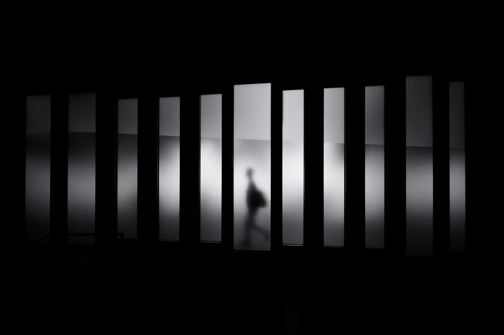
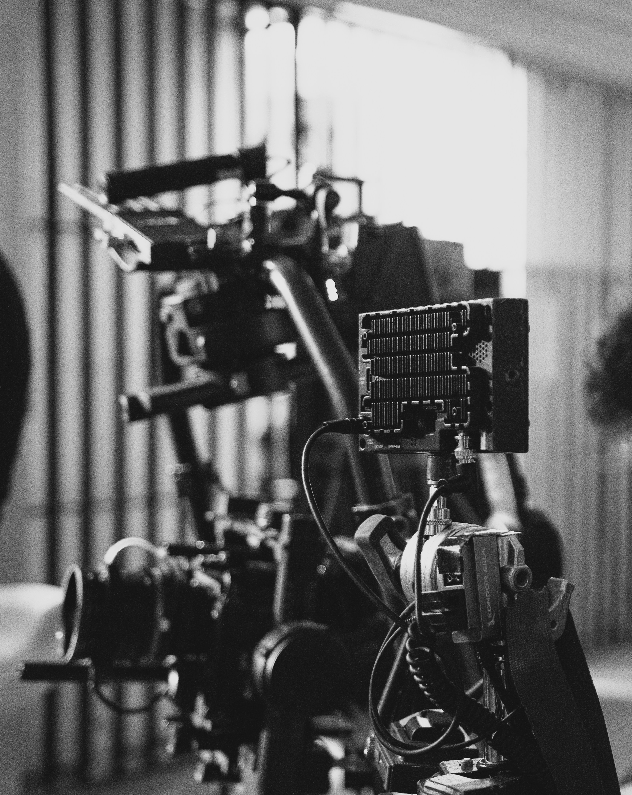
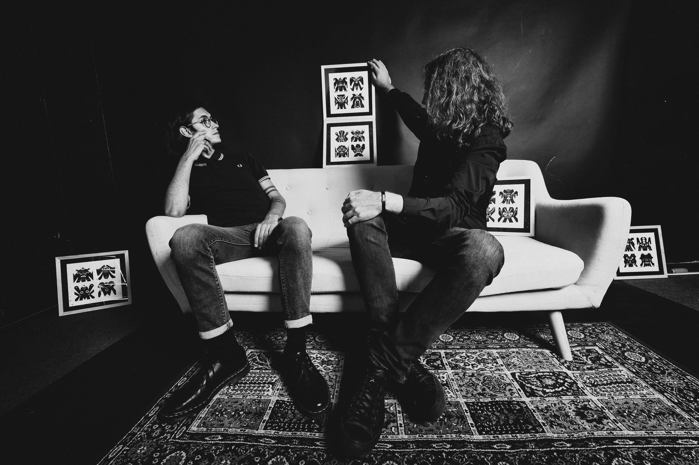
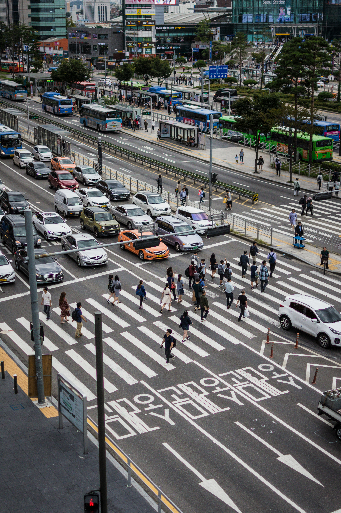
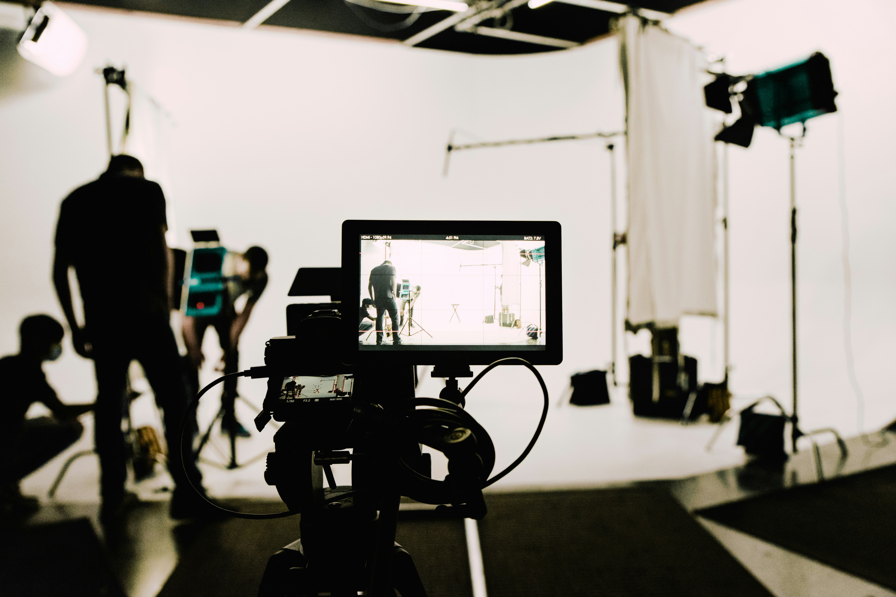

좋은 장면은 연출되지 않습니다.
다만 발견됩니다.
우리는 그 발견의 순간을
함께하는 사람들을 기록합니다.
흘러가는 것들 사이에서, 남는 것을 압니다.


좋은 장면은 연출되지 않습니다.
다만 발견됩니다.
우리는 그 발견의 순간을
함께하는 사람들을 기록합니다.
흘러가는 것들 사이에서, 남는 것을 압니다.
We listen first, observe deeply,
and translate sincerity into images that last.

OFFRAME는 결정적 순간만을 선별하는 독립 미디어 플랫폼입니다. 누군가의 이야기에는 말로 다 담기지 않는 것이 있습니다. 우리는 그 결을 위해 카메라를 들기 전 먼저 물어보고, 당신의 이야기가 어디에서 시작되었는지, 무엇을 남기고 싶은지, 그렇게 파악한 이야기를 사진이 오래 머무는 이미지로 기록합니다.
OFFRAME is a visual storytelling studio that translates your sincerity
into visual language. Every story carries a message that words alone cannot
capture. To fully understand the context,
we ask before we shoot—where your
story began, and what you want to leave behind. We then record that sincerity
into images where the heart resonates.
OFFFRAME captures stories in those unscripted moments—the beats where truth is most visible. We do more than document; we study rhythm and tempo to find the authentic narrative. It is a ritual of discovery, revealing stories even the subject hasn't yet told.
OFFFRAME는 일상의 정박에서 벗어난 엇박자의 순간, 가장 진실한 이야기를 포착하는 미디어를 제안합니다. 당신의 호흡과 리듬을 관찰하며 '가장 진실한 서사'를 찾아가는 과정을 함께합니다. 낯선 카메라 앞에서 긴장이 이완으로 바뀌는 그 찰나, 당신조차 몰랐던 진실한 이야기를 발견하는 시간입니다.
지금 OFFRAME은 기록되지 않은 목소리들을 향해 카메라를 들고 있습니다. 우리가 주목하는 것은 완성된 무대가 아니라, 그 직전의 긴장과 숨결입니다. 각각의 프로젝트는 누군가의 진짜 이야기를 찾아가는 여정이며, 우리는 그 과정에서 속도보다 밀도를 선택합니다. 지금 이 순간도, OFFRAME은 결정적 장면을 향해 천천히 다가서고 있습니다.

OFFRAME Live Session
Unscripted Vol.2

서울의 엇박자 — 시즌 2

애프터 컷!